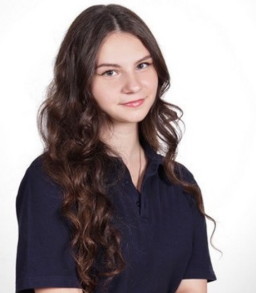
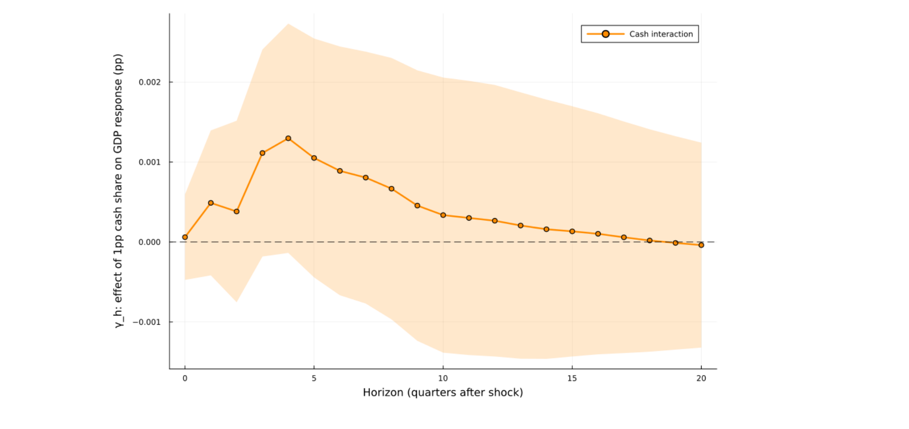

I enjoy digging into economic questions and finding out, with data, why the same policy can work so differently from one country to the next.
One rule, applied across many countries, rarely produces the same result in each of them. Finding out why is what I enjoy most.
I am completing a BSc in Econometrics and Operations Research at Maastricht University, including a semester at Università di Roma Tor Vergata. My thesis looked at how ECB monetary policy reaches thirteen euro-area economies, and found that it transmits more weakly where people rely more on cash. It was graded 9.0.
I am about to join ABN AMRO as a Market and Liquidity Risk Intern. Alongside my studies I chaired the lustrum committee of Vectum, the study association for Econometrics and Operations Research.

Joining the Market and Liquidity Risk team for the banking book, where I will help produce reports for the risk management team and contribute to projects such as stress testing.
Completing my final courses in Econometrics and Operations Research, with graduation expected in winter 2026-27. My thesis on monetary policy transmission across the euro area was graded 9.0.
Does monetary policy work less well where people pay in cash?
Most channels through which interest rates reach the real economy run through bank balance sheets. Cash payments do not. So policy should transmit more weakly where cash is still dominant, and cash use varies enormously across the euro area: 22% of point-of-sale transactions in the Netherlands against 62% in Austria.
I estimated structural VARs for thirteen euro-area economies, identified with high-frequency interest rate surprises, then pooled the impulse responses in a cross-country regression interacted with each country's cash share. The weakening appears where the mechanism predicts, at the horizons where output responds most, and it survives dropping any single country.

Assessed the economic impact of selected public policies using applied econometric methods, and wrote the results up for a non-specialist reader.
Applied forecasting and optimisation methods to the operations of SABIC, working from the firm's own data to a recommendation, in a team, to a deadline.
Built and validated a time-series model of Dutch climate trends, with model selection and diagnostic testing.